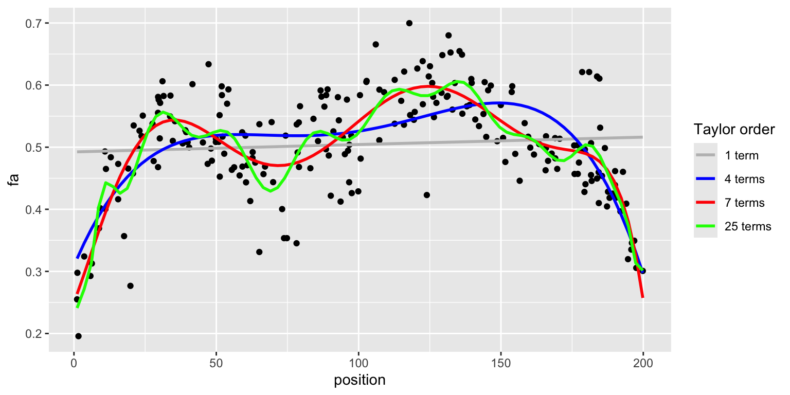

Code
set.seed(406406)
library(tidyverse)
data(arcuate, package = "Stat406")
arcuate <- arcuate |> slice_sample(n = 220)
arcuate |>
ggplot(aes(position, fa)) +
geom_point(color = "black") +
geom_smooth(aes(color = "a"), formula = y ~ x, method = "lm", se = FALSE) +
geom_smooth(aes(color = "b"), formula = y ~ poly(x, 4), method = "lm", se = FALSE) +
geom_smooth(aes(color = "c"), formula = y ~ poly(x, 7), method = "lm", se = FALSE) +
geom_smooth(aes(color = "d"), formula = y ~ poly(x, 25), method = "lm", se = FALSE) +
scale_color_manual(
name = "Taylor order",
values = c("a" = "grey", "b" = "blue", "c" = "red", "d" = "green"),
labels = c("1 term", "4 terms", "7 terms", "25 terms")
)